第1回: ガイダンス
今回の目標
- 数値解析の概要を理解し、本講義で扱うトピックの全体像を把握する
- C 言語の開発環境（コンパイル・実行）が手元で動作することを各自で確認する
数値解析とは
数値解析（numerical analysis）とは、数学的な問題に対して数値的な近似解を求める手法の体系である。解析的に厳密解が得られない、あるいは得ることが困難な問題に対して、コンピュータを用いて実用的な精度の解を求めることを目的とする。
その基本的なアイデアは離散化である。連続的な関数や微分方程式を、有限個の点における値や四則演算に置き換えることで、計算機で扱える形に変換する。
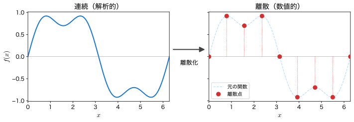
数値解析が動かす世界
現代の科学技術において、数値解析は不可欠なツールである。理論・実験に並ぶ第三の方法論として、計算科学（computational science）は多くの分野を支えている。スマートフォンに表示される天気予報から、ブラックホール衝突がつくる重力波の解読まで、その背後では膨大な数値計算が動いている。
身近なところにも数値解析
天気予報・カーナビの経路探索・MRI 画像の再構成・地震の揺れの予測・ワクチンの設計・CG 映画の流体表現 — これらはすべて、本講義で学ぶ手法の延長線上にある。
ここでは、本講義で学ぶ手法が実際にどんな計算を可能にするのかを、結果の図とともに紹介する。各例には、本講義のどの回で扱うかを示した。今は数式の細部が分からなくても構わない。「こんなことができるのか」という感覚を持ち帰ってほしい。
① 天気予報とカオス — 常微分方程式
天気予報は数値解析の最も身近な応用である。大気の運動を記述する Navier-Stokes 方程式を地球全体を覆う三次元格子上で離散化し、時間発展を計算する。1922 年に L.F. Richardson が手計算で試みた数値天気予報は、1950 年に ENIAC（初期の電子計算機）によって初めて実用的な計算機予報として実現された。
現在の数値予報は、大気の状態を表す変数を全球の三次元格子上に並べ、支配方程式を時間方向に積分して未来の状態を求める。下図はその一例で、NASA の全球大気モデル GEOS によるエアロゾル輸送計算の結果である。中緯度の渦列やサハラ砂じんの大西洋横断といった構造が、観測ではなく離散化した方程式を解いた結果として現れている。
しかし大気はカオス的である。初期値のごくわずかな違いが時間とともに指数関数的に増幅し、長期予報を困難にする。下図は、対流を極端に単純化したローレンツ方程式の解である。アトラクタ（左）は複雑な軌道を描き、初期値を \(0.1\%\) だけ変えた 2 つの計算（右）は、ある時刻を境に全く異なる振る舞いを見せる。これが「ブラジルの蝶の羽ばたきがテキサスで竜巻を起こす」と例えられるバタフライ効果である。
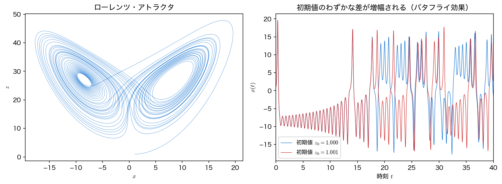
アルゴリズム. ローレンツ方程式（Lorenz system）は次の 3 変数の常微分方程式系である。
これを微小時間刻みで前進させるのがルンゲ＝クッタ法（Runge-Kutta method）などの数値積分法である。
本講義との接続
第4〜7回 常微分方程式。オイラー法・ルンゲ＝クッタ法・線形多段法を学び、安定性解析でなぜ計算が破綻するのかを理解する。
実装例（OSS）: WRF — Weather Research and Forecasting Model（世界中の気象機関で使われる気象モデル）
② 方程式を解く — ニュートン法
「方程式を解く」ことは数値解析の最も基本的な問題である。\(f(x) = 0\) を満たす根を、反復計算で少しずつ追い詰めていく。根を挟む区間を半分にしていく二分法は確実だが遅い。これに対しニュートン法は、現在の近似値での接線の零点を次の近似値にとることで、正しい桁数が1反復ごとにほぼ倍になる（2次収束）。誤差が \(10^{-12}\) を切るまでに、二分法が \(39\) 反復を要するところをニュートン法は \(5\) 反復で済ませる。
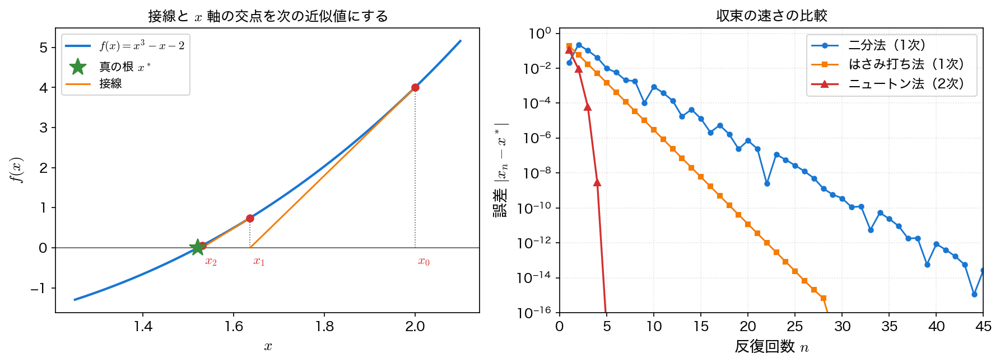
アルゴリズム. 現在の近似値 \(x_n\) における接線の零点を次の近似値とする。
本講義との接続
第2回 非線形方程式。二分法・ニュートン法・はさみ打ち法を実装し、収束の速さと確実性のトレードオフを比較する。
実装例（OSS）: SciPy（scipy.optimize）（科学計算の標準ライブラリ）
③ 巨大な連立方程式を解く — 共役勾配法
構造解析・電磁場・流体など、多くのシミュレーションは最終的に巨大な連立1次方程式 \(A\mathbf{x} = \mathbf{b}\) に帰着する。未知数が数百万を超えると、行列をまともに逆行列計算するのは非現実的であり、行列の疎性（ほとんどの要素が 0）を活かした反復法が不可欠になる。対称正定値行列に対しては共役勾配法が圧倒的に強力である。
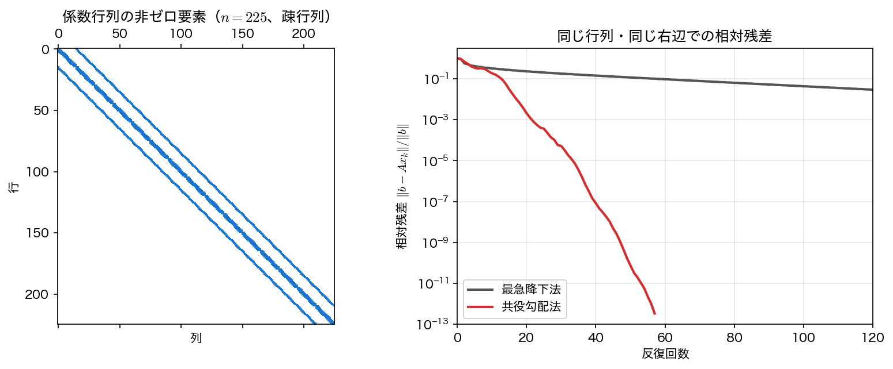
アルゴリズム. 探索方向を互いに「共役」になるように選びながら近似解を更新する。理論上、\(n\) 元の方程式は高々 \(n\) 回の反復で厳密解に到達する。
本講義との接続
第3回 連立1次方程式。共役勾配法の原理と実装を学び、収束を加速する前処理の考え方に触れる。
実装例（OSS）: PETSc（大規模科学計算向けの線形・非線形ソルバ群）
④ 熱はどう伝わるか — 拡散方程式
CPU の放熱、地中の温度分布、汚染物質の広がり — こうした拡散現象は拡散方程式 \(\partial_t u = \alpha \nabla^2 u\) で記述される。空間を格子に区切り、ラプラシアン \(\nabla^2\) を隣接点の差で近似すれば、温度がならされていく様子を時間を追って計算できる。
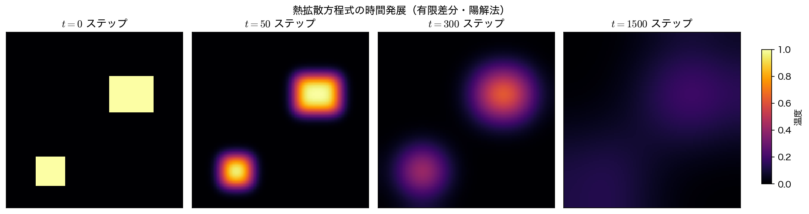
アルゴリズム. 有限差分法（finite difference method）で空間微分を近似し、各格子点の温度を時間方向に更新する。陽解法では時間刻みに安定条件があり、これを破ると計算が発散する。
本講義との接続
第9〜10回 偏微分方程式。拡散方程式（放物型）とポアソン方程式（楕円型）の差分解法を学ぶ。
実装例（OSS）: FEniCS / DOLFINx（有限要素法による偏微分方程式ソルバ）
⑤ 波と流れ — 移流方程式と数値流体力学
音波・津波・交通渋滞、そして翼まわりの気流。これらの根底にあるのが移流方程式 \(\partial_t u + c\,\partial_x u = 0\) である。「形を保ったまま流れる」だけの最も単純な方程式だが、素朴に離散化すると形が崩れてしまう。下図のように、1 次精度の風上差分は角がなまる（数値拡散）一方、2 次精度のスキームは行き過ぎた振る舞いをする（数値振動）。「どう離散化するか」が結果を大きく左右することを示す好例である。
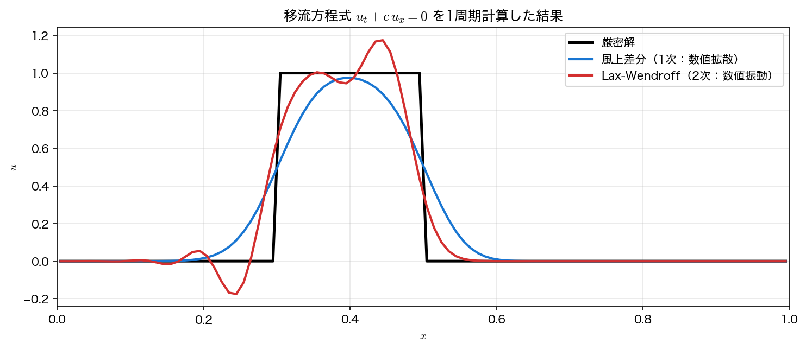
ここで見たのは 1 次元の矩形波という最も単純な例だが、まったく同じ問題が実機の設計計算にそのまま現れる。次の ⑥ で見る。
本講義との接続
第11回 偏微分方程式（移流方程式）。双曲型方程式の差分スキームと、数値拡散・数値振動の起源を学ぶ。
実装例（OSS）: Clawpack（双曲型偏微分方程式系を有限体積法で解くパッケージ）
⑥ 実機の設計はこう解く — 航空機・自動車まわりの流れ
⑤ の移流の問題は、そのまま実機の設計計算に現れる。航空機や自動車まわりの流れは、移流項をもつ Navier-Stokes 方程式を三次元空間で解いて予測する。空間を数百万〜数億のセルに分割し、各セルでの質量・運動量の収支を積み上げる有限体積法が標準的に使われる（CFD: 計算流体力学）。風洞実験を代替し、開発コストと期間を大幅に削減する。
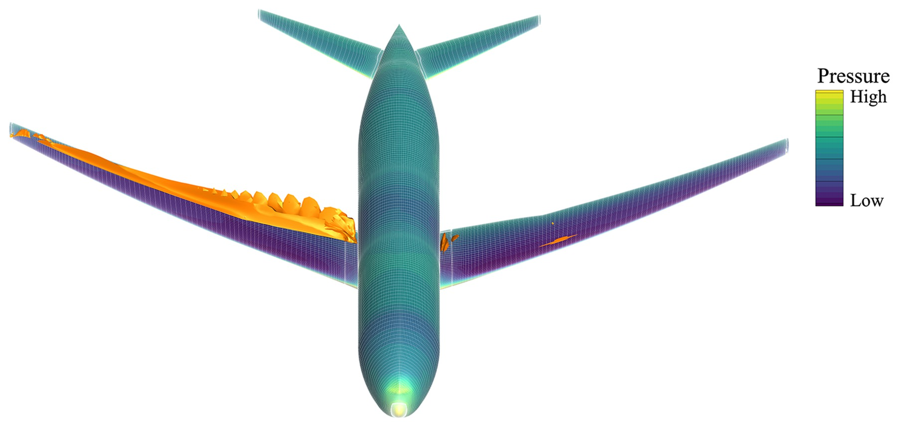
自動車でも事情は同じである。下図は乗用車まわりの渦構造で、車体後方に広がる後流が空気抵抗の主な発生源になる。
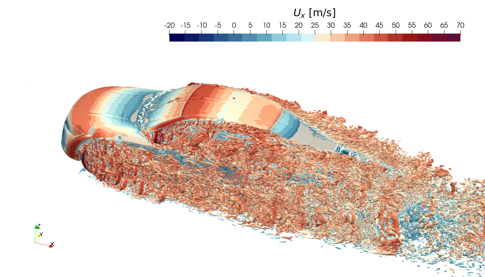
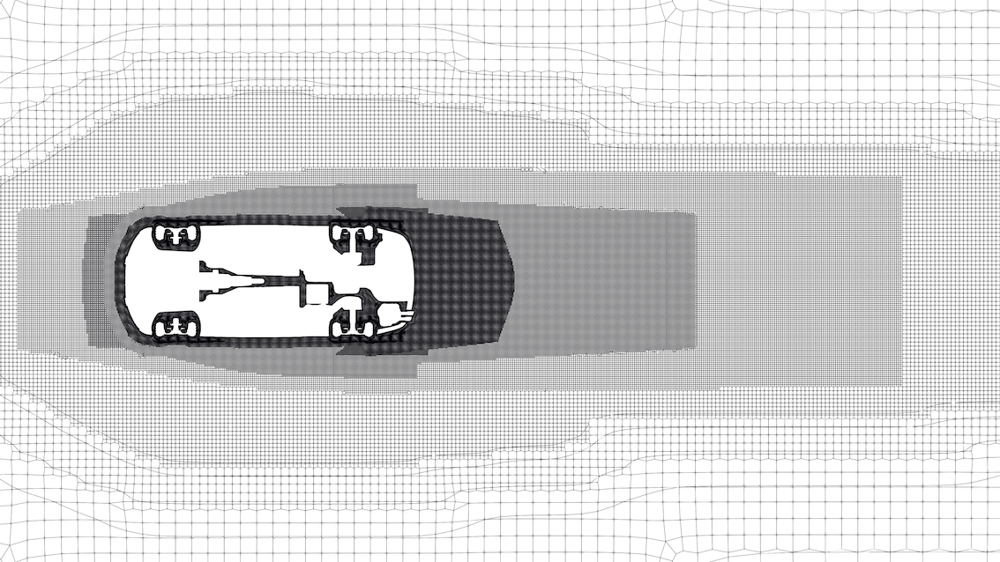
アルゴリズム. 精度を決めるのは移流項 \((\mathbf{u}\cdot\nabla)\mathbf{u}\) の離散化である。⑤ で見た数値拡散がここでもそのまま効き、安定化のために入れた数値粘性が物理的な粘性を上回ると、レイノルズ数の違う流れを計算していることになってしまう。さらに非圧縮流れでは毎ステップ圧力のポアソン方程式を解く必要があり、その中身が ③ で見た巨大な連立1次方程式である。
本講義との接続
第3回 連立1次方程式・第11〜12回 偏微分方程式・第14回 並列計算。移流項の離散化、圧力ポアソン方程式の反復解法、そしてそれを多数のコアで分担する並列化 — この計算は本講義の内容がひと通り組み合わさって成り立っている。
実装例（OSS）: OpenFOAM（産業界でも広く使われる CFD ソフトウェア） / SU2（圧縮性流れと空力形状最適化のためのソルバ群）
⑦ 信号から本質を取り出す — フーリエ変換
JPEG 画像・MP3 音声・ノイズ除去・MRI の画像再構成 — 現代の情報技術は、信号を周波数成分に分解するフーリエ変換に支えられている。とりわけ高速フーリエ変換（FFT: Fast Fourier Transform）が計算量を \(O(N^2)\) から \(O(N \log N)\) に削減したことが、その実用化を可能にした。
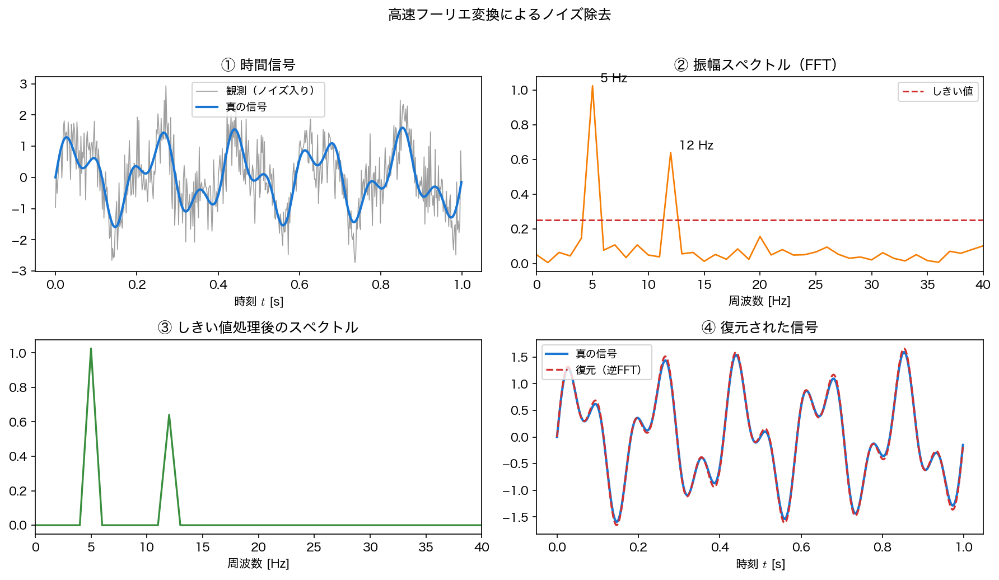
アルゴリズム. 信号を FFT で周波数領域へ変換し、不要な周波数成分を取り除いてから逆 FFT で時間領域へ戻す。
本講義との接続
第13回 高速フーリエ変換とスペクトル法。FFT のアルゴリズムと、それを用いて微分方程式を高精度に解くスペクトル法を学ぶ。
実装例（OSS）: FFTW（事実上の標準となっている高速フーリエ変換ライブラリ）
⑧ 星はどう生まれるか — 重力・流体・磁場
巨大分子雲が自分の重力で収縮し、その中で星が生まれる。この過程には自己重力・流体・磁場・ガスの放射冷却・生まれた星から噴き出すジェットが同時に効いており、解析的に追うことはできない。全体像を与えられるのは数値計算だけである。
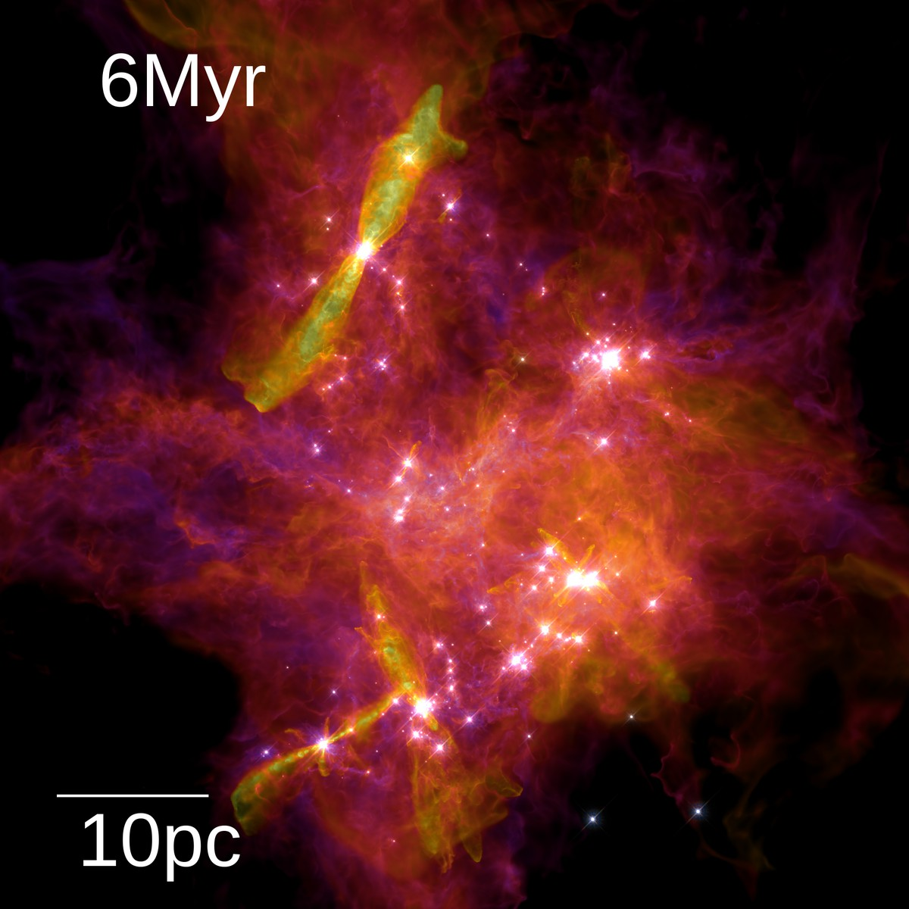
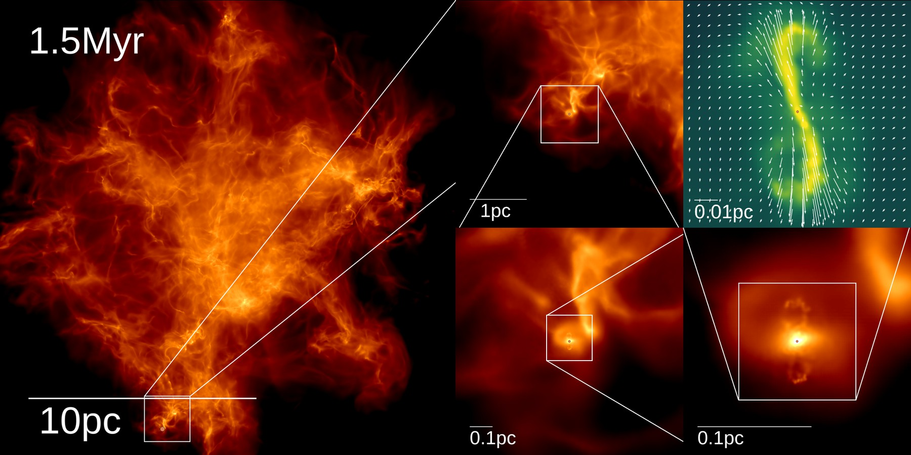
アルゴリズム. 支配方程式は移流項・拡散項をもつ流体方程式であり、④⑤ で見た離散化の問題がそのまま現れる。ここで難しいのは分解能の幅である。仮に一様格子で \(0.01\ \mathrm{pc}\) まで刻むとすると、一辺 \(10\ \mathrm{pc}\) で \(1000\) 点、三次元では \(10^9\) 点が必要になる。必要な場所だけ細かくする適応的な分解能（適合格子細分化、あるいは質量を追うラグランジュ的な粒子法）と、多数のコアで仕事を分担する並列化が前提になる。
本講義との接続
第12回 偏微分方程式（多次元）と第14回 並列計算。多次元化で格子点数が次元の冪で増えること、そして領域分割によって計算を分担する考え方を学ぶ。
実装例（OSS）: GIZMO（STARFORGE が用いる多物理・大規模並列コード） / Athena++（適合格子細分化を備えた磁気流体コード） / Enzo（適合格子細分化による宇宙論シミュレーションコード）
さらに広がる応用
図にはしないが、数値解析は次のような最先端の科学技術も支えている。いずれも本講義で学ぶ手法の延長線上にある。
- 重力波の検出 — 2015 年、LIGO は人類史上初めて重力波を直接検出した。ブラックホール連星の合体を数値相対論（Einstein 方程式の数値積分）で計算したテンプレート波形が、ノイズに埋もれた信号の同定に不可欠だった。実装例: PyCBC
- 建築物の耐震設計 — 有限要素法（FEM）で建物を多数の要素に分割し、地震応答を解析する。固有値解析で固有振動数を求め、地震動との共振を避ける。実装例: deal.II
- 新薬の開発 — 薬物の体内動態（吸収・分布・代謝・排泄）を常微分方程式系でモデル化し、ルンゲ＝クッタ法で解いて投与量を最適化する。実装例: SUNDIALS
なお、上で使った外部提供の可視化画像（①⑥⑧）の出典・ライセンス・加工内容は図の出典にまとめてある。
本講義で扱うトピック
本講義では、上で見た応用を実現するための手法を、数学的な原理の理解とプログラミングによる実装の両面から段階的に学ぶ。
- 非線形方程式・連立1次方程式の解法（第2〜3回）
- 常微分方程式の数値解法（第4〜7回）
- 偏微分方程式の数値解法（第9〜12回）
- フーリエ変換とスペクトル法（第13回）
- 並列計算（第14回）
加えて、第8回と第15回は発表会とし、学んだ手法で各自が見つけた問題を解いて発表する（発表会ガイド）。
各応用例と、それを扱う回・手法の対応は次の通りである。
| 応用例 | 扱う回 | 主な手法 |
|---|---|---|
| 方程式の求根（②） | 第2回 | 二分法・ニュートン法 |
| 巨大な連立方程式（③） | 第3回 | 共役勾配法 |
| 天気予報・軌道計算（①） | 第4〜7回 | オイラー法・ルンゲ＝クッタ法 |
| 熱・拡散（④） | 第9〜10回 | 有限差分法（放物型・楕円型） |
| 波・流れ（⑤） | 第11〜12回 | 移流方程式の差分法 |
| 航空機・自動車の空力（⑥） | 第3・11〜12回 | 有限体積法・圧力ポアソン方程式 |
| 信号処理（⑦） | 第13回 | FFT・スペクトル法 |
| 星形成・大規模計算（⑧） | 第12・14回 | 多次元 PDE・MPI による並列計算 |
開発環境について
前提
本講義では、C 言語のプログラムをコンパイル・実行できる開発環境が各自で構築済みであることを前提とする。普段から使い慣れた環境で構わない。
環境がまだ整っていない、あるいは構築方法に不安がある場合のために、以下の環境構築ガイドを用意している。いずれもあくまで参考であり、これらの方法に限定するものではない。
- Visual Studio Community — Windows 向けの統合開発環境
- Docker 環境構築 — Docker を使った統一開発環境
- マニュアルインストール — OS ごとの個別インストール手順
環境が C プログラムをコンパイル・実行できるかは、動作確認 で確かめられる。